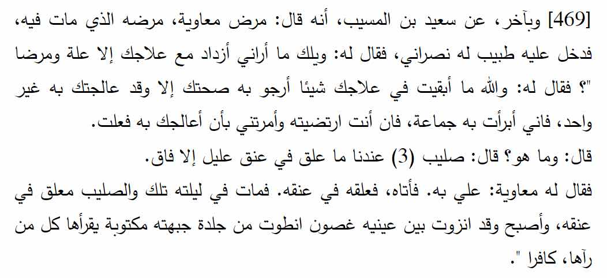
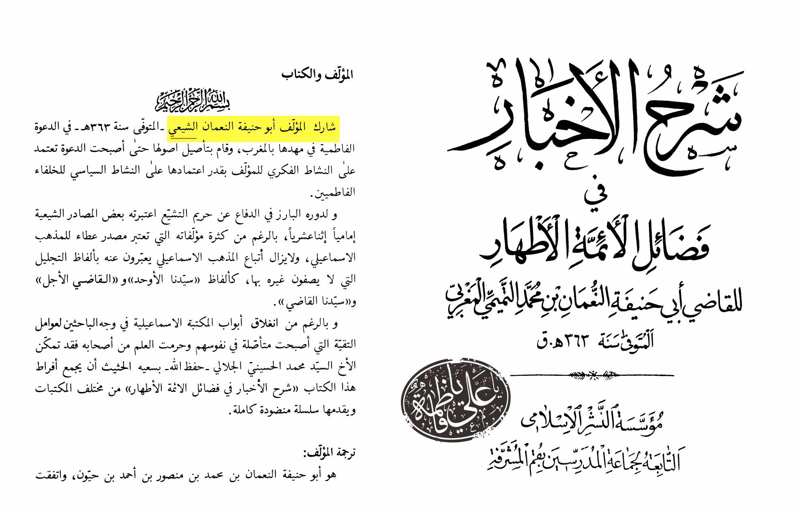
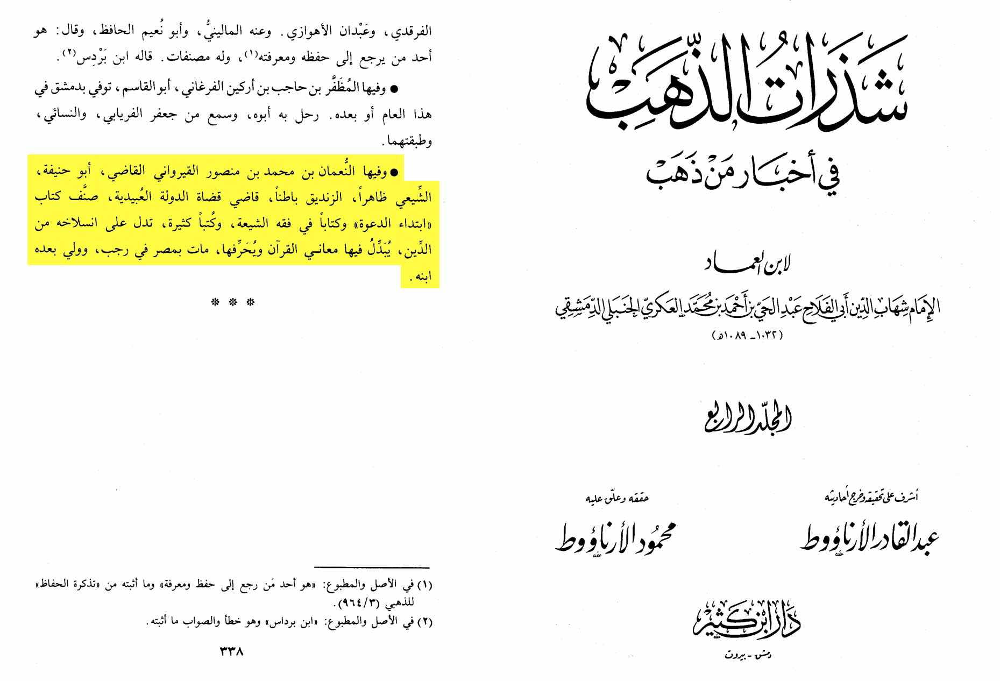
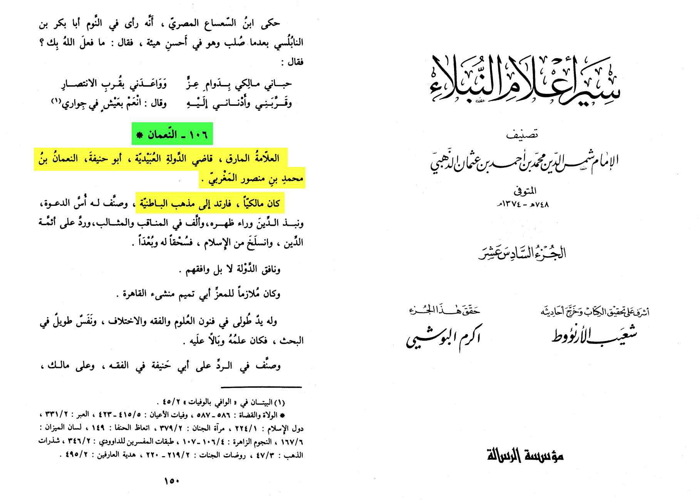

Did Mu’āwiyah die with a cross on his neck? Let’s find out

In this book Sharh al-Akhbar it says Mu'awiyah died with a Christian Cross on his neck, dying upon kufr.
Now allegedly this is written by Abu Hanifa RH. Now is it really? Lets see if that's true if we go to the
Muqaddimah of the book we find this written:

Turns out, this Abu Hanifa (with the same first name as the madhab founder 'Nu'man')
is a Shi'i?! lets investigate this further;

Here in the book Shadhrat al-Dhahab which is a great Sunni Tarikh book, the great author
Ibn Ahmad al-Akari al-Hanbali RH says that this Nu'man Bin Ahmad Bin Mansur al-Qadhi,
was a shia and this was apparent, and he was a Zindeeq inside. This Abu Hanifa is not
the one we are familiar with (AKA. Nu'man Bin Thabit Abi Hanifa al-Kufi).
This is a Shia who shares the same Kunya and name as Abu Hanifa
Lets look into this further;

Here in Siyar A'lam al-Nubala by Imam al-Dhahabi RH he says that this Abu Hanifa was a Maliki then became a Batini.